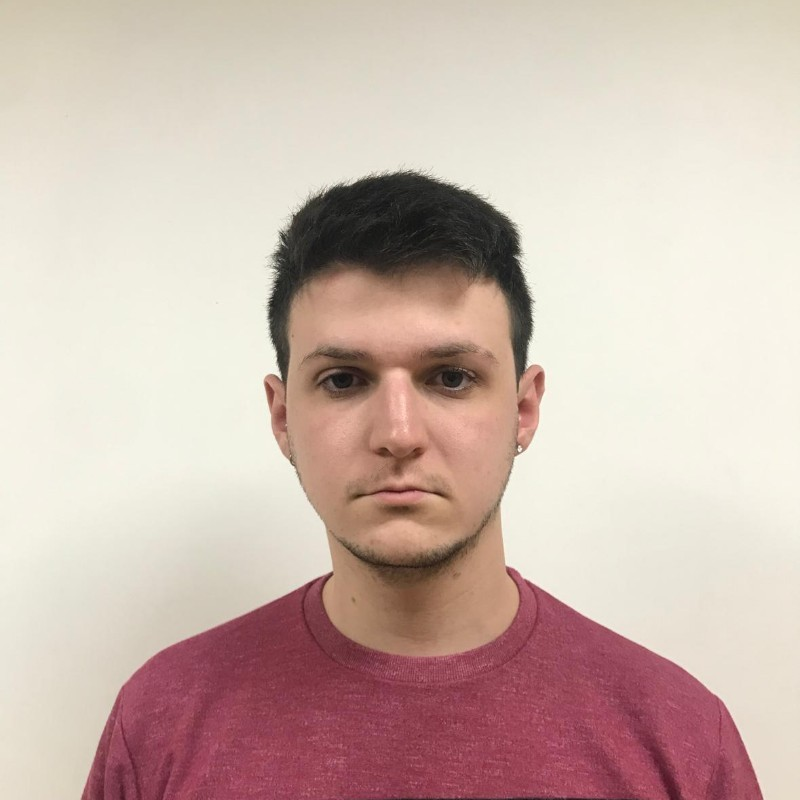

Gianluca Francisco
Descripcion Personal
Fui estudiante de UiPath, tengo el curso completo de Uipath Advance RPA Developer Certification Training.
Fui estudiante de Ingenieria en Sistemas en la Universidad Tecnologica Nacional de la Plata (FRLP).
Me adapto y desarrollo profesionalmente en cualquier tipo y modalidad de trabajo. Me
manejo con facilidad en con las tecnologías modernas y me mantengo informado sobre las
nuevas plataformas y metodologías virtuales.
Educacion Formal
Titulo Secundario
Instituto Victoria Ocampo : MAR. 2013 - SEP. 2019
Experiencias Laborales
Pista de Patinaje Alto Avellaneda : AGO 2018 - FEB 2020
Hablidades Tecnologicas
- Paquete de Microsoft Office
- UiPath Studio
- Robotic Enterprice Framework
- Orchestrator
- Email Automation with Studio
Habilidades Blandas
- Proactivo
- Responsable
- Autodidacta
- Adaptativo
- Comprension Rapida
- Gestion de tiempo
Idiomas
- ESPAÑOL : Lengua Materna
- INGLES : Nivel B2 Intermedio
Hobbies
- Jugar videojuegos
- Mirar series
- Adquirir conocimientos mediante videos
¿Por que estudio en Henry?
Estudio en Henry porque un familiar me lo recomendo y me resulto curioso su forma de aprendizaje, siempre estuve al tanto de ser Full-Stack Devoloper y queria
aprender a programar porque es algo que siempre he querido desde que me introduje en el mundo tecnologico. Mis expectativas al final de la carrera son de estar
trabajando en alguna empresa con todos los conocimientos para ser un Junior.